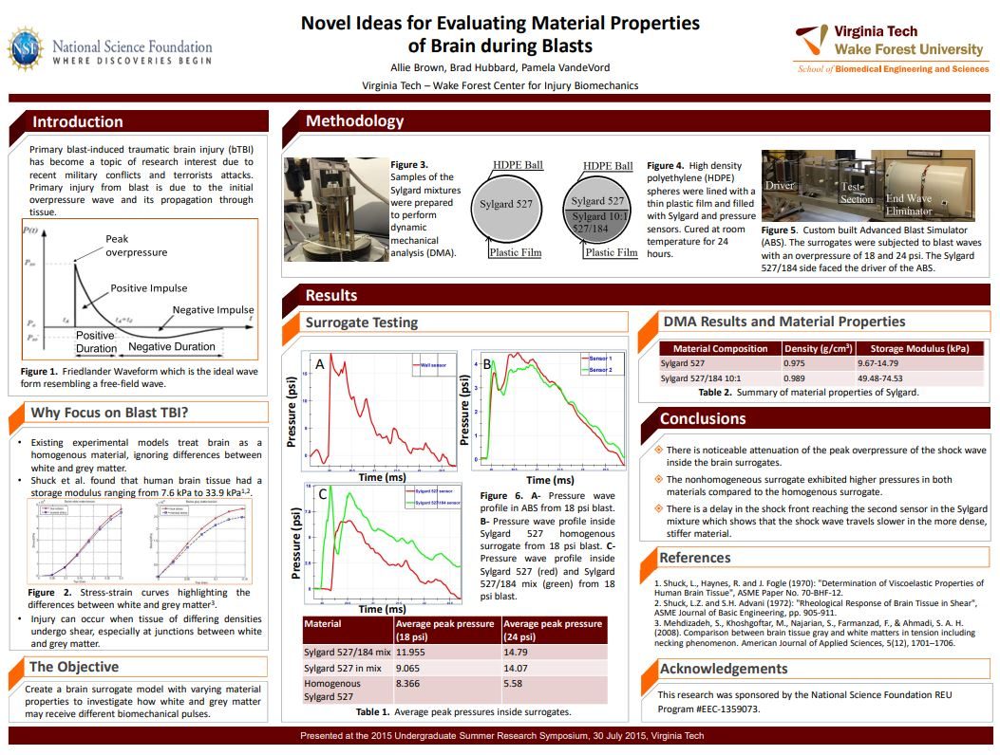

Blast Wave Propagation in a Brain Surrogate
This project was a comparative exploration of peak pressures in a simulated blast wave chamber with two brain surrogates of different material compositions. This research was conducted at Virginia Tech and sponsored by the NSF.
